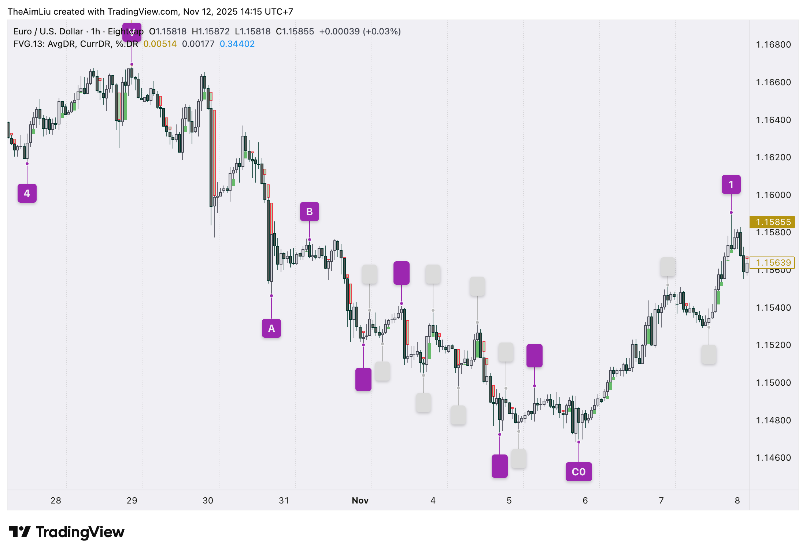

STR / ITR / LTR — Tiered Pivot Compression
pivotTimestamp (where the pivot is) and eventTimestamp (when it becomes usable) are always separate — the engine is causal by design.
00 Core Hierarchy
Each tier compresses the raw extremes of the tier below it:
raw candles → STR (survival N bars) STR pivots → ITR (group compression: lower high / higher low) ITR pivots → LTR (same rule, one tier up)

pivotTimestamp vs eventTimestamp.01 STR — Survival-based Confirmation
STR (Short-Term Range) is the first pivot layer from raw candles.
A candle high or low is promoted to STR only after it remains unbroken for N future bars.
This deliberately separates pivotTimestamp (the candidate candle) from eventTimestamp (the confirmation candle) — the engine is causal at the source.
Discretionary → Algorithm mapping
Step 1 · Submit every new high/low as a candidate pivotEvent.py:on_bar
On each bar, the engine adds the current bar's high and low to a candidate pool. Candidates age one bar per tick. A candidate is not yet a pivot — it is just an unresolved extreme waiting for survival confirmation.
Step 2 · Age and break — evict anything that gets broken pivotEvent.py:_breaks_candidate
Each bar, every live candidate is checked. If a future bar breaks it (body or wick depending on mode), it is discarded. Otherwise its age counter increments.
Conservative mode (default): only body movement breaks a candidate.
body_high = max(open, close) body_low = min(open, close) high candidate broken if body_high > candidate.price low candidate broken if body_low < candidate.price
Aggressive mode: any wick extension breaks it.
high candidate broken if bar.high > candidate.price low candidate broken if bar.low < candidate.price
Step 3 · Confirm at age N — apply alternation and best-eligible selection pivotEvent.py:_select_eligible_candidate
When a candidate reaches age ≥ str_bars (N), it becomes eligible for promotion. The engine applies two gates:
- Alternation: after a confirmed high, only a low candidate is accepted, and vice versa.
- Best-eligible: if multiple candidates of the expected side are eligible simultaneously, emit only the most extreme one — highest for highs, lowest for lows.
This suppresses the common doji-cluster problem where N bars of tight overlap would otherwise emit a burst of same-side events.
The formal survival condition for a high candidate at candle $i$:
$$ \text{STR High} \iff \forall k \in \{i+1,\dots,i+N\}: \; \mathrm{body\_high}(k) \le \mathrm{price}(i) \quad\text{(conservative)} $$And the alternation gate — let $s_n$ be the confirmed pivot side sequence: $$s_{n+1} = -s_n \quad\text{(strictly alternating)}$$
N sensitivity
N = 1 very short structure (noisy) N = 2 short structure ← current config default N = 3 slower / cleaner N = 5 much slower
02 ITR — Group Compression
ITR (Intermediate-Term Range) compresses confirmed STR extremes. The idea: when a new STR high is lower than the current group extreme (right-shoulder failure), it confirms that the group has peaked. The ITR pivot is assigned to the group extreme — the head.
How the group extreme works
The engine tracks a running high group (for ITR highs) and a running low group (for ITR lows):
ITR High — right-shoulder lower high pivotEvent.py:_itr_event_from_str
STR high group: H1 = 1.1000 ← starts group H2 = 1.1050 ← new group extreme (head) H3 = 1.1020 ← lower high = right shoulder when H3 confirms: ITR high fires at H2 (pivotTimestamp = H2's timestamp) eventTimestamp = H3's confirmation timestamp
The relation field is set to lower_high. The confirmation STR pivot reference (H3) is carried in sourceCandleRefs.
ITR Low — right-shoulder higher low pivotEvent.py:_itr_event_from_str
STR low group: L1 = 1.0900 ← starts group L2 = 1.0850 ← new group extreme (head) L3 = 1.0880 ← higher low = right shoulder when L3 confirms: ITR low fires at L2 relation = higher_low
Alternation
Without alternation, an uptrend creates many higher_low ITR lows in sequence, producing the same noise problem as raw STR without alternation.
The gate enforces PE03 → PE04 → PE03 — repeated same-side ITR events are suppressed until the opposite ITR side fires.
lower_high / higher_low for relation — not "right shoulder" or "CHoCH". Layer 3 and Layer 4 apply semantic interpretation.03 LTR — Tier Compression
LTR (Long-Term Range) mirrors ITR exactly, one tier higher. The raw unit changes from STR pivots to ITR pivots. Everything else — group extreme tracking, right-shoulder confirmation, alternation — is identical.
ITR high group: H1 = 1.1200 ← starts group H2 = 1.1250 ← ITR group extreme (head) H3 = 1.1220 ← lower ITR high = right shoulder when H3 confirms: LTR high fires at H2 sourceTier = "itr" eventCode = "PE05" (ltrHighConfirmed)
LTR can only land on an existing ITR pivot — never directly on STR or raw candles. Enabling LTR requires ITR to be enabled first.
04 Algorithm
The engine runs one on_bar() call per bar in the replay loop. All three tiers process in a single pass.
# pivotEvent.py — PivotEventEngine.on_bar() def on_bar(self, row: pd.Series) -> list[PivotEvent]: emitted: list[PivotEvent] = [] survivors, eligible = [], [] # Age + break existing candidates for candidate in self._candidates: if self._breaks_candidate(candidate, open, high, low, close): continue # broken — discard candidate.age += 1 if candidate.age >= self.str_bars: eligible.append(candidate) else: survivors.append(candidate) # Promote best eligible candidate (alternation + extreme selection) selected = self._select_eligible_candidate(eligible) if selected is not None: str_ev = self._event_from_candidate(selected, ts) if self.str_enabled: emitted.append(str_ev) itr_ev = self._itr_event_from_str(str_ev) if self.itr_enabled else None if itr_ev and self._itr_side_is_expected(itr_ev.pivot_side): emitted.append(itr_ev) ltr_ev = self._ltr_event_from_itr(itr_ev) if self.ltr_enabled else None if ltr_ev and self._ltr_side_is_expected(ltr_ev.pivot_side): emitted.append(ltr_ev) self._remember_itr_event(itr_ev) self._remember_str_event(str_ev) self._last_confirmed_side = selected.side # Always register the current bar's new candidates survivors.append(_Candidate(side=1, price=high, timestamp=ts, ...)) survivors.append(_Candidate(side=-1, price=low, timestamp=ts, ...)) self._candidates = survivors return emitted
# Conservative mode (default) body_high = max(open, close) body_low = min(open, close) if candidate.side == 1: # high candidate broken = body_high > candidate.price else: # low candidate broken = body_low < candidate.price # Aggressive mode if candidate.side == 1: broken = bar.high > candidate.price else: broken = bar.low < candidate.price
# Alternation gate: only accept the expected side expected_side = -1 if last_confirmed_side == 1 else 1 eligible = [c for c in candidates if c.side == expected_side] if not eligible: return None # Best-extreme selection if expected_side == 1: return max(eligible, key=lambda c: c.price) # highest high return min(eligible, key=lambda c: c.price) # lowest low
Payload shape
All three tiers use a single PivotEvent dataclass. The eventId is deterministic and human-readable:
{
"eventId": "PE:PE01:15m:2024-08-28T00:00:00Z:2024-08-24T00:00:00Z:1.120030",
"eventCode": "PE01",
"eventName": "strHighConfirmed",
"eventGroup": "PE",
"tier": "str",
"timeframe": "15m",
"pivotSide": 1, // 1 = high, -1 = low
"pivotTimestamp": "2024-08-24T00:00:00Z", // where the pivot is
"eventTimestamp": "2024-08-28T00:00:00Z", // when it becomes usable
"causalAvailableAt": "2024-08-28T00:00:00Z",
"pivotPrice": 1.12003,
"mode": "conservative",
"survivalBars": 2,
"sourceBarIndexes": [100, 102],
"sourceCandleRefs": [
{"role": "candidate", "timestamp": "2024-08-24T00:00:00Z"},
{"role": "confirmation", "timestamp": "2024-08-28T00:00:00Z"}
]
}
{
"eventCode": "PE03",
"eventName": "itrHighConfirmed",
"tier": "itr",
"sourceTier": "str",
"sourceEventCode": "PE01",
"pivotTimestamp": "2024-08-24T00:00:00Z", // group extreme (head)
"eventTimestamp": "2024-08-28T00:00:00Z", // right-shoulder confirms
"confirmationTimestamp": "2024-08-27T00:00:00Z",
"confirmationEventTimestamp": "2024-08-28T00:00:00Z",
"confirmationPrice": 1.102,
"relation": "lower_high",
"sourceCandleRefs": [
{"role": "source_pivot", "timestamp": "2024-08-24T00:00:00Z"},
{"role": "confirmation_pivot", "timestamp": "2024-08-27T00:00:00Z"},
{"role": "confirmation_event", "timestamp": "2024-08-28T00:00:00Z"}
]
}
{
"eventCode": "PE05",
"eventName": "ltrHighConfirmed",
"tier": "ltr",
"sourceTier": "itr", // source is ITR, not STR
"sourceEventCode": "PE03",
"relation": "lower_high",
// identical shape to ITR — pivot lands on ITR group extreme
}
Event code reference
PE01 strHighConfirmed (side=1) PE02 strLowConfirmed (side=-1) PE03 itrHighConfirmed (side=1) ← primary structure tier PE04 itrLowConfirmed (side=-1) ← primary structure tier PE05 ltrHighConfirmed (side=1) optional — slower PE06 ltrLowConfirmed (side=-1) optional — slower
05 Config
All pivot event settings live under pivot_events: in config.yaml. The compute: block controls which tiers run; display: controls visibility independently.
# replayer/config.yaml:175 pivot_events: enabled: true mode: conservative # conservative | aggressive str_bars: 2 # N — survival bar count compute: str: true itr: true ltr: true display: event_log: str: false # hide STR rows — too noisy for review itr: true ltr: true chart_markers: str: false itr: true ltr: true
# PivotEventEngine.__init__() reads the same cfg dict self.mode = cfg.get("mode", "conservative") self.str_bars = int(cfg.get("str_bars", 1)) # must be >= 1 compute = cfg.get("compute", {}) self.str_enabled = bool(compute.get("str", True)) self.itr_enabled = self.str_enabled and bool(compute.get("itr", False)) self.ltr_enabled = self.itr_enabled and bool(compute.get("ltr", False)) # LTR requires ITR; ITR requires STR — chain dependency enforced here
str: false in compute: silently disables ITR and LTR too, because the engine gates itr_enabled = str_enabled and .... This is intentional — ITR/LTR have no meaning without a live STR feed.06 Open Issues · Edge Cases · Next Milestone
Warmup sensitivity. At the left edge of history the first visible pivot depends on where the dataset starts. The engine starts expecting a high first (cold-start default). Warmup bars are needed before the first ITR/LTR can be trusted.
EQH / EQL tie. Two candles with the exact same high (or low) both survive N bars and become eligible on the same tick. max() returns the first match in the list — the older candle — so STR lands on the earlier bar. Correct behavior, but implicit.
BoS / structural repair events. SC01–SC04 live in the Structure Context (Layer 3), not in the pivot event engine. No BoS event codes (old PE07–PE08 style) are planned at the marking layer. Rebuild starts from clean STR.
Aggressive mode suppresses STR during doji sessions. In aggressive mode, any wick beyond a candidate breaks it — so in a tight doji cluster, constant wick noise evicts candidates before they age to N bars and STR goes quiet. Conservative mode is safer here: doji bodies rarely exceed a prior extreme, so candidates survive and STR fires normally.
Legacy payload aliases. The active PE emitter uses the canonical event-stream envelope, but replay/UI adapters still carry compatibility fields such as tf, event_code, decision_ts, and anchor_ts. The old marker contract should also be retired or clearly marked inactive once the UI no longer depends on these names.